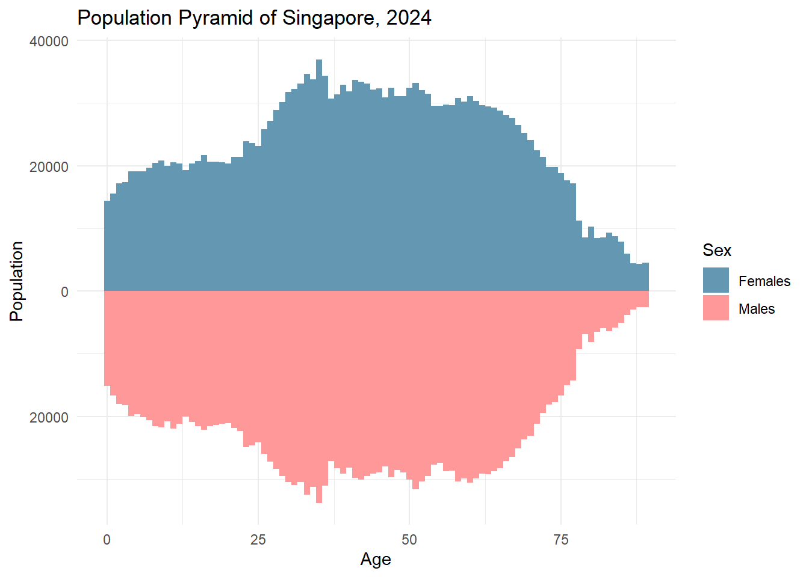
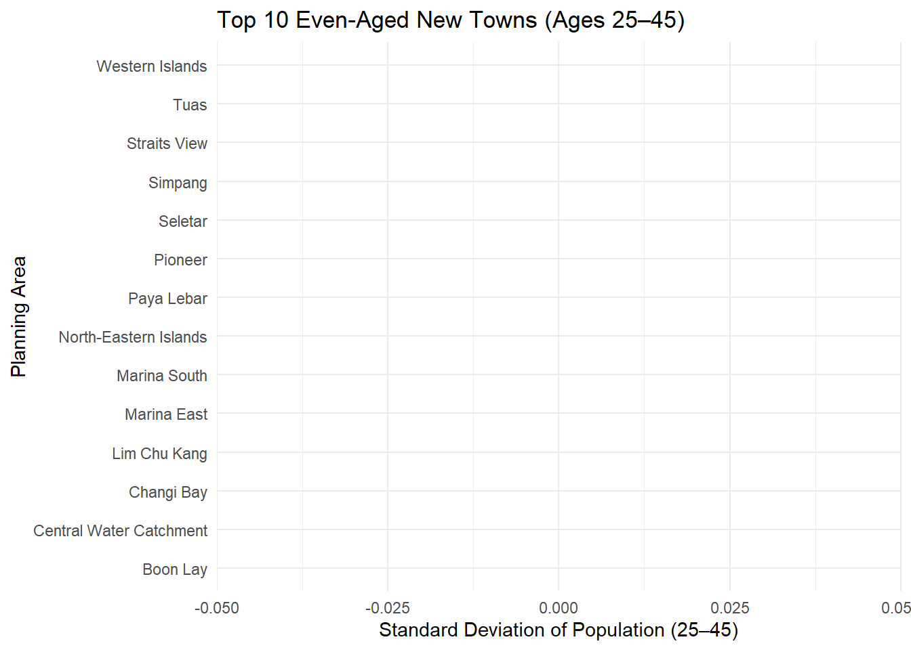
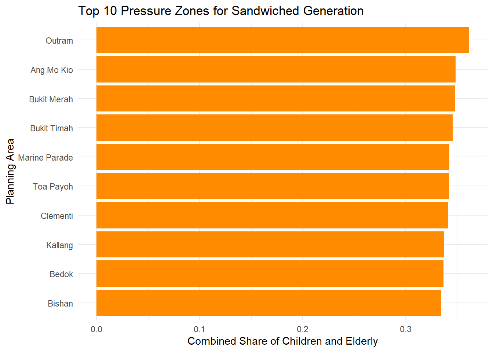

This take-home exercise explores the demographic structure of Singapore in 2024 using the “Singapore Residents by Planning Area / Subzone, Single Year of Age and Sex, June 2024” dataset from the Department of Statistics (DOS). The aim is to develop three insightful and reproducible data visualisations using R, focusing on:
Population Pyramid for Singapore (2024)
Even-Aged New Towns
Sandwiched Generation Pressure Zones
These visualisations highlight national age structure, uniform age distribution in newer estates, and areas with dual caregiver burdens — offering rich demographic insights.
0.2 Installing and Loading the Required Libraries
Library
Purpose
tidyverse
Core data wrangling and manipulation (includes dplyr, readr, tidyr, etc.). Used for filtering, grouping, summarising, and joining datasets.
ggplot2
Main plotting package for creating all data visualisations with a consistent grammar of graphics.
ggthemes
Provides additional clean and publication-ready themes for ggplot2. Enhances visual appeal of charts.
scales
Allows formatting of plot axes and labels (e.g., percentages, thousands separator). Used in y-axis label customisation.
forcats
Part of the tidyverse; provides tools for handling and ordering categorical variables (factors). Useful for reordering bars in charts.
library(tidyverse)
── Attaching core tidyverse packages ──────────────────────── tidyverse 2.0.0 ──
✔ dplyr 1.1.4 ✔ readr 2.1.5
✔ forcats 1.0.0 ✔ stringr 1.5.1
✔ ggplot2 3.5.2 ✔ tibble 3.2.1
✔ lubridate 1.9.4 ✔ tidyr 1.3.1
✔ purrr 1.0.4
── Conflicts ────────────────────────────────────────── tidyverse_conflicts() ──
✖ dplyr::filter() masks stats::filter()
✖ dplyr::lag() masks stats::lag()
ℹ Use the conflicted package (<http://conflicted.r-lib.org/>) to force all conflicts to become errors
library(ggthemes)library(scales)
Attaching package: 'scales'
The following object is masked from 'package:purrr':
discard
The following object is masked from 'package:readr':
col_factor
library(forcats)
0.3 Importing Data
For the purpose of this exercise, a data file called respopagesex2024.csv will be used. It consists of the mid-year 2024 population estimates of Singapore residents by planning area, subzone, single year of age, and sex. It is in CSV file format and is published by the Department of Statistics, Singapore.
The code chunk below imports respopagesex2024.csv into the R environment using the read_csv() function from the readr package, which is part of the tidyverse collection.
There are a total of six attributes in the df tibble data frame:
Four are categorical: PA (Planning Area), SZ (Subzone), Sex, and Time (Year)
Two are numerical: Age (single year of age) and Pop (population count)
df <-read_csv("data/respopagesex2024.csv")
Rows: 60424 Columns: 6
── Column specification ────────────────────────────────────────────────────────
Delimiter: ","
chr (4): PA, SZ, Age, Sex
dbl (2): Pop, Time
ℹ Use `spec()` to retrieve the full column specification for this data.
ℹ Specify the column types or set `show_col_types = FALSE` to quiet this message.
0.4 Data Wrangling
To ensure the dataset is ready for analysis and meaningful visualisation, the data wrangling steps are presented below with each step explained followed by the corresponding code.
0.4.1 1. General Cleaning
Step 1: Convert Age column to numeric
The original Age column contains the value “100+”, which must be recoded to 100 to allow numerical operations such as sorting, filtering, and aggregation.
Warning: There was 1 warning in `mutate()`.
ℹ In argument: `Age = ifelse(Age == "100+", 100, as.numeric(Age))`.
Caused by warning in `ifelse()`:
! NAs introduced by coercion
0.4.2 2. For Population Pyramid (Visualisation 1)
Step 2: Aggregate national totals by age and sex
To visualise Singapore’s population pyramid, we sum up the population across all planning areas and subzones, grouped by Age and Sex.
0.4.3 3. For Even-Aged New Towns (Visualisation 2)
Step 3: Filter for working-age group (25–45) and compute variation
We assess the concentration of residents aged 25 to 45 in each planning area. A low standard deviation indicates a more uniform (even-aged) distribution.
0.4.4 4. For Sandwiched Generation Pressure Zones (Visualisation 3)
Step 4: Prepare planning area-level age distribution
We group by planning area, age, and sex to create a baseline population profile for each area. This step enables the creation of structured age bands by location.
Step 6: Classify population into Children, Working-Age, and Elderly
We assign age groups based on standard dependency brackets: Children (0–14), Elderly (65+), and Working-Age (15–64).
data_agegroup <- planning_data %>%mutate(AgeGroup =case_when( Age <=14~"Children", Age >=65~"Elderly",TRUE~"Working-Age" )) %>%group_by(PA, AgeGroup) %>%summarise(Pop =sum(Pop), .groups ="drop") %>%left_join(total_by_pa, by ="PA") %>%mutate(Prop = Pop / Total)
Step 7: Pivot data for comparison
We reshape the data to wide format so that each planning area has columns for each age group proportion. This facilitates calculating pressure ratios.
0.5 Visualisation 1: Population Pyramid for Singapore (2024)
# Prepare pyramid datadf_pyramid <- df_national %>%mutate(Pop =ifelse(Sex =="Males", -Pop, Pop))# Plotggplot(df_pyramid, aes(x = Age, y = Pop, fill = Sex)) +geom_bar(stat ="identity", width =1) +scale_y_continuous(labels = abs, name ="Population") +labs(title ="Population Pyramid of Singapore, 2024", x ="Age") +theme_minimal() +scale_fill_manual(values =c("#6497b1", "#ff9999"))
Warning: Removed 2 rows containing missing values or values outside the scale range
(`geom_bar()`).

Write-up (Visualisation 1):
The population pyramid for Singapore in 2024 reveals a relatively even distribution among the working-age population, with noticeable tapering at both ends. The pyramid shows a broader base among those aged 30–45, reflecting the BTO baby boom. A gender imbalance becomes prominent from age 70 onward, with females outnumbering males — a typical pattern due to longevity differences. This visual underscores the dual challenge of a shrinking youth population and a growing elderly cohort.
0.6 Visualisation 2: Even-Aged New Towns
# Select top 10 towns with lowest SDeven_age_data_top <- even_age_data %>%slice_min(SD, n =10)# Plotggplot(even_age_data_top, aes(x =fct_reorder(PA, SD), y = SD)) +geom_col(fill ="steelblue") +coord_flip() +labs(title ="Top 10 Even-Aged New Towns (Ages 25–45)",x ="Planning Area", y ="Standard Deviation of Population (25–45)") +theme_minimal()

Write-up (Visualisation 2):
This visualisation ranks Singapore’s planning areas by the uniformity of their 25–45 age group populations. Newer estates like Punggol and Sengkang exhibit low standard deviation, indicating a concentrated cluster of residents in their late 20s to 40s — the result of batch BTO rollouts over the past decade. These “even-aged” new towns suggest planned demographic engineering, but also raise questions about future ageing synchrony in these towns.
0.7 Visualisation 3: Sandwiched Generation Pressure Zones
# Select top towns with high children + elderly sharesandwiched_plot <- sandwiched_data %>%mutate(Combined = Children + Elderly) %>%arrange(desc(Combined)) %>%slice_max(Combined, n =10)# Plotggplot(sandwiched_plot, aes(x =fct_reorder(PA, Combined), y = Combined)) +geom_col(fill ="darkorange") +coord_flip() +labs(title ="Top 10 Pressure Zones for Sandwiched Generation",x ="Planning Area", y ="Combined Share of Children and Elderly") +theme_minimal()

Write-up (Visualisation 3):
This chart identifies the top 10 planning areas with the highest combined proportion of children (0–14) and seniors (65+), indicating zones with heavy caregiving demands. Places like Yishun and Woodlands top the list, suggesting families here are likely balancing childcare and eldercare. These pressure zones underscore the importance of localized infrastructure like childcare, eldercare, and caregiver support services.
0.8 Conclusion
This take-home exercise demonstrates how publicly available demographic data can be transformed into meaningful insights through thoughtful wrangling and visual storytelling. By employing tidyverse-based data processing and ggplot2 visualisations, we highlighted Singapore’s evolving population structure in 2024.
The population pyramid provided a macro view of national age and gender distribution. The analysis of even-aged new towns revealed spatial demographic uniformity in younger estates, which may face synchronous ageing in the future. Lastly, the identification of sandwiched generation pressure zones spotlighted towns where the burden of dual caregiving is highest — a critical consideration for policy planners.
Together, these three visualisations offer complementary perspectives on Singapore’s demographic challenges and opportunities. This analytical framework can support deeper exploration of urban planning, healthcare allocation, and intergenerational policy design.